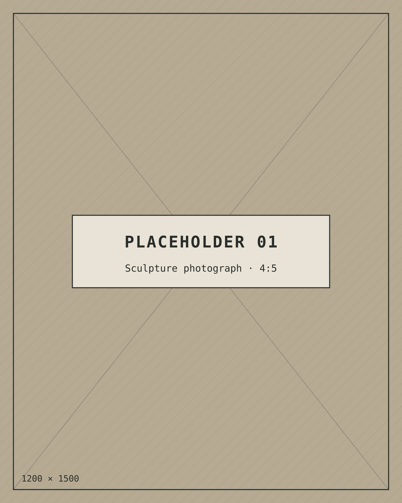

Edd Hurst, I imagine.
Making things for screens, and occasionally out of stone.
- CSS
- HTML
- Accessibility
- Design systems
§ 01 — Expertise
What I make things with.
Curious about how things work, and about building them properly from the beginning.
-
CSS
Creative, robust and maintainable styling. Enjoys exploring what CSS can do beyond the obvious.
-
HTML
Semantic, resilient foundations. Building things properly from the beginning.
-
Accessibility
Making the web work for everyone. Accessibility should be considered throughout the design and development process.
-
Design Systems
Creating consistent, scalable and understandable interface systems.
§ 02 — Selected experiments
Things on the workbench.
A few personal projects, utilities and experiments. Digital things, physical things, and everything between.

§ 03 — Stone
A different kind of making.
A slower, more physical kind of problem solving, where the material has a say in the final result.